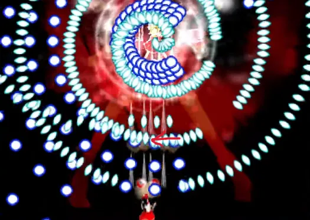
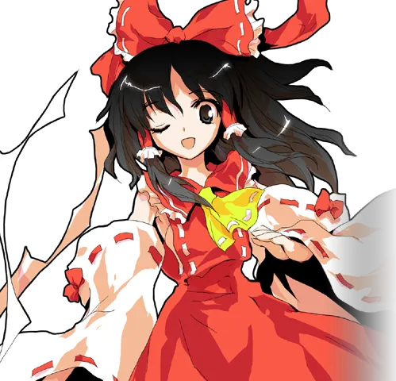
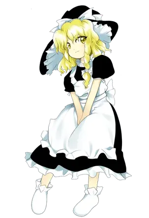
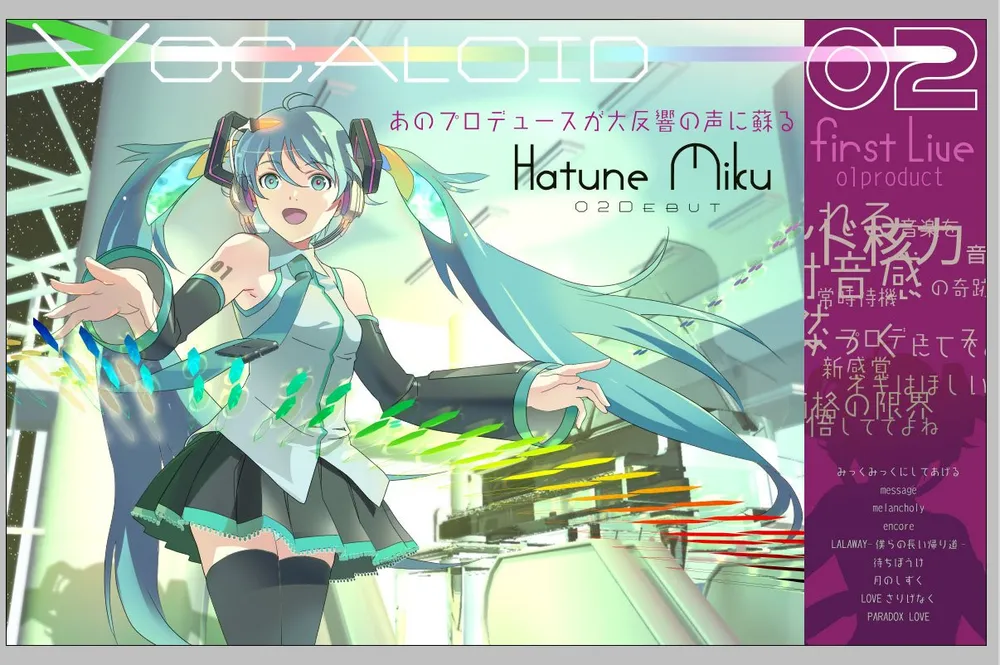

팬이 다시 만드는 세계
프로슈머 생태계의 완성: 동방 프로젝트와 보컬로이드 (2000s)
1. 『동방 프로젝트』:
여백
의 미학과 2차 창작
원작의 역할:
1인 개발자(ZUN)가 외형·탄막 슈팅·테마곡 등 핵심 뼈대만 제공.
팬의 채움:
빈 공간을 만화, 음악 편곡, 파생 게임으로 채우며 세계관을 무한 확장.
2. 하츠네 미쿠와 「멜트」
(2007)
백지(Blank Canvas):
고정된 정사 서사가 없어 창작자의 의도를 자유롭게 투영 가능.
「멜트」의 의의:
보컬로이드 팝의 기점이자 '불러보았다·연주해보았다' 창작 연쇄 폭발.
3. 니코니코 동화와 '
유입의 역전
'
동방 2차 창작물과 보컬로이드 곡이 한데 모이는 거대한 공유 생태계 형성.
2차 창작 영상을 먼저 접한 후 ➔ 원작으로 역유입되어 ➔ 신규 창작자가 되는 선순환 확립.
동방홍마향 (원작 게임)

하쿠레이 레이무

키리사메 마리사

ryo (supercell) - 멜트 (2007)
